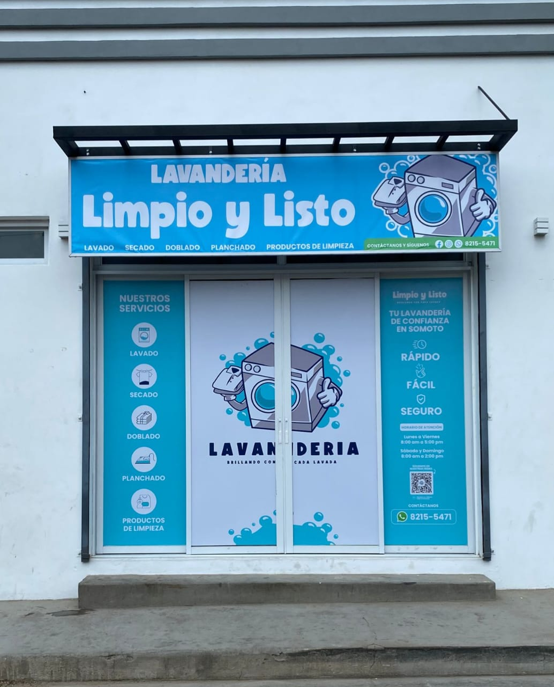
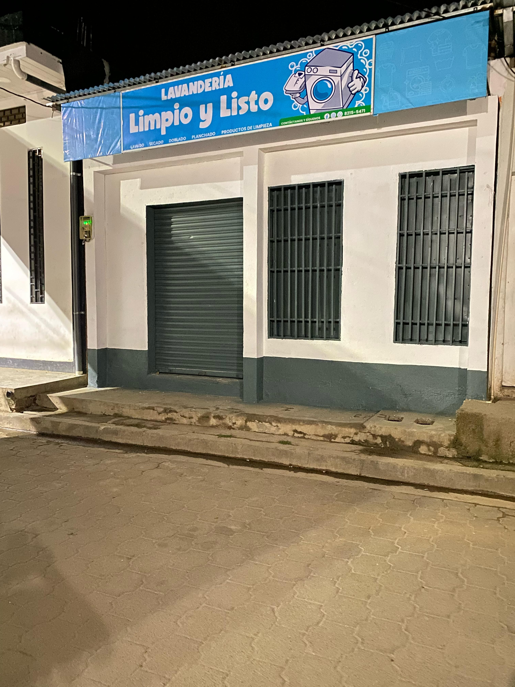

Somoto
Municipio: Somoto, capital del departamento de Madriz, conocida por el famoso Cañón de Somoto.
Dirección: De clínica Médica Previsional 1 C al Oeste. Sector 4.
Jalapa
Municipio: Jalapa, municipio de Nueva Segovia, rodeado de montañas y cafetales, muy cerca de la frontera con Honduras.
Dirección: De Ferretería Noelito N°1 cuadra y media al Este, sector 8.
Ocotal

Municipio: Ocotal, cabecera departamental de Nueva Segovia, ciudad histórica y de gran comercio.
Dirección: De Fundenuse 2 cuadras al Oeste.